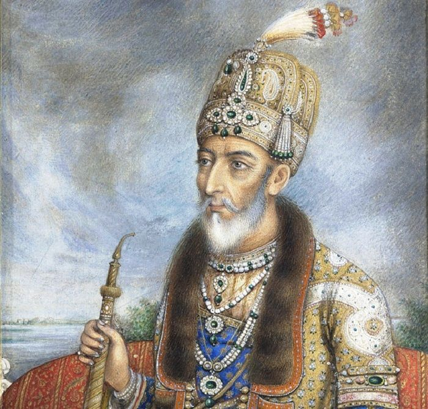
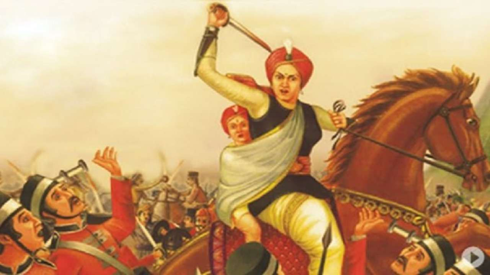
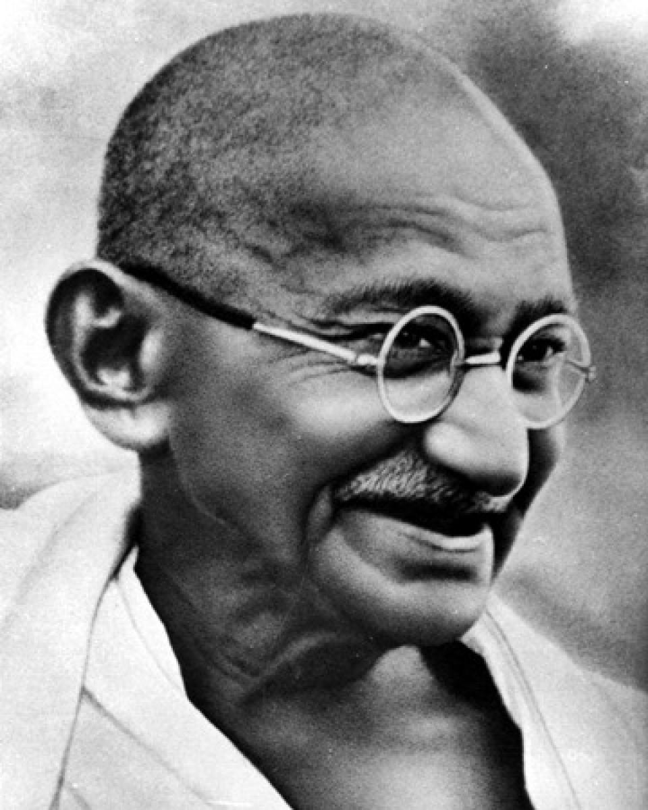
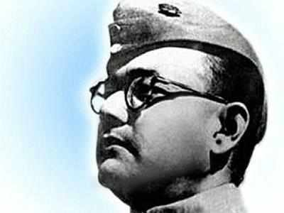

History of Independence of India
The rule of the Mughals, which began in 1526
with Babur's accession to the throne, ended
with the death of Aurangzeb in 1707. After
the fall of the Mughal Empire, the Marathas,
Jats,Rajputs and Ruhellas emerged as regional
powers.Awadh,Bengal,Deccan and Mysore became
independent states.The country was divided
politically, and there was no sense of national
unity.This political vaccum provided an opportunity
for the British to gain ground.In India,Britain was
represented by the British East India company,
which started off as a joint stock company. It
had been given a royal charter in 1600 to pursue trade
in the East Indies(land of south and southeast Asia).By
the 1750s East India Company began interfering in India
affairs.

It is claimed that the British rule in India actually
began after the British defeated Siraj-Ud-Daulah,the Nawab of
Bengal, in the Battle of Plassey on June 23,1757. Robert Clive of the
EIC defeated the forces of Siraj-Ud-Daulah and his French support
troops.Clive thought that the best way to safeguard the Company's
interests in Bengal was to replace Siraj with a new and more
subservient nawab.He found a candidate in a disgruntled general
named Mir Jafar. Siraj-Ud-Daulah was killed by his own people,with
Mir Jafar replacing him. After the Battle of Plassey and Battle of Buxar
the British became the masters of Bengal.

At 1857 the Indians started the first war of independence but they lost as the whole India was not
united.Some of the famous freedom fighter of the war were Tantia Tope, Nanasahib, Rani Lakshmi
Bai.In 1885 A.O Hume formed it. Its first President was Womesh Chandra Bonnerjee.In 1905 British government,Lord
Curzon, Viceroy in India announced that Bengal will be divided in two parts one for hindus and the other part for the muslims.
The partition came into effect in 1905.At the request of Gopal Krishna Gokhale, conveyed to him by C. F. Andrews,
Gandhi returned to India in 1915. He brought an international reputation as a leading Indian nationalist, theorist and community organiser.
Gandhi joined the Indian National Congress and was introduced to Indian issues, politics and the Indian people
primarily by Gokhale.

Gokhale was a key leader of the Congress Party best known for his restraint and moderation,
and his insistence on working inside the system .On April 13,1919,Baisakhi
celebrations were being held in Jallianwala Bagh in Amritsar. Without any warning
general Dyer attacked on the unarmed people it resulted to death of several 1000 peoples. Batukeshwar Dutt exploded two bombs, along with Bhagat Singh, in the Central
Legislative Assembly in New Delhi on 8 April 1929.The Salt Satyagraha was a mass civil disobedience
movement initiated by Mahatma Gandhi against the salt tax imposed by the British government in India. He led a large group of
people from Sabarmati Ashram on 12th March 1930 till Dandi, a coastal village in Gujarat, to break the salt law by producing salt from seawater.

In 1943 Netaji Subhash Chandra Bose created Azad Hind Fouz which was
supported by Japan, Nazi Germany, the Italian Social Republic and their allies.
Under his provisional government, the Indians became united and participated in World War 2.
The Quit India movement by Gandhiji called for immediate independence of India
and finally at midnight of 15th August 1947 India became free from
British and Pt. Jawaharlal Nehru became the first prime minister of free India.